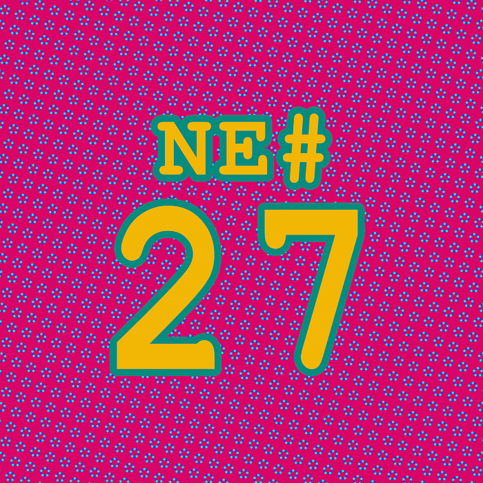

Die Nerd Enzyklopädie 27 - Die Geschichte von Mel

Die “Geschichte von Mel“ ist eine Reminiszenz an die frühen Jahre der Informationstechnologie. In der Geschichte verarbeitet Ed Nather seine Erlebnisse als Softwareentwickler bei der Royal McBee Computer Corporation, einem Hersteller von Computern.
In 1956 vertrieb die Royal McBee zusammen mit der General Precision Inc. den LGP-30, einen „röhrenbestückten Magnettrommelrechner“ [STUT1]. Der Rechner kostete damals beeindruckende 47.000 USD, was heute in etwa 470.000 USD entspricht [WIKI8].
Melvin „Mel“ Kaye (geb. Kornitzky), Nathers Kollege, entwickelte für diesen Computer ein BlackJack-Spiel, das sich sehr großer Beliebtheit erfreute und z.B. auf Messen zu Demonstrationszwecken vorgeführt wurde.
Mit dem RPC 4000 veröffentlichte die RoyalBee in 1960 einen leistungsfähigeren Nachfolger für den LGP-30. Das 230-kg-Ungetüm ging damals für saftige 87.500 USD über die hoffentlich stabile Ladentheke [WIKI8]. Um auf Messen weiterhin für Unterhaltung zu sorgen, wurde Kaye damit beauftragt, sein BlackJack-Spiel auf den RPC 4000 zu portieren.
Auf Anraten des Vertriebs bat die Geschäftsführung Kaye darum, einen Schalter einzubauen, mit dem sich einstellen lässt, dass der Computer verliert. Mutmaßlich, um den interessierten Käufen auf den Messen wohlwollend zu begegnen.
Nather porträtiert Kaye als Archetypen eines ethischen Hackers. Ein exzellenter Softwareentwickler mit Prinzipien. Kaye kam dem Wunsch der Geschäftsführung nicht ganz nach. Er implementierte eine umgekehrte Funktion und so sorgte der Schalter dafür, dass der Computer immer gewinnt.
Ein Ärgernis für die Geschäftsführung und den Vertrieb. Da Kaye die RoyalBee kurz darauf verließ, offensichtlich weil sich seine Werte nicht mit denen des Unternehmens deckten [MELS1], wurde Nather damit beauftragt, den „Bug“ zu beheben. Und das fiel ihm nicht sonderlich leicht, dafür hatte Kaye mit einigen programmatischen Hürden gesorgt.
Nather beschreibt sein Vorgehen als Abenteuer und Kaye als „unbesungenes Genie“. Die technischen Finessen und Tricks, die Kaye in den Quellcode eingebaut hatte, beeindruckten Nather zutiefst:
When the light went on it nearly blinded me.
(The Story of Mel, Ed Nather, 1983)
So berichtet Nather von Endlosschleifen und Quellcode, der sich selber modifizierte. Letztlich gelang es Nather nicht, den Bug zu beheben, vielleicht auch aus Respekt vor dessen Schöpfer. Also blieb die Funktion des Schalters bestehen: Er sorgte weiterhin dafür, dass der Computer gewinnt.
Wann genau sich die Geschichte zugetragen hat, ist nicht sicher überliefert. Nather verarbeitet das Geschehen in Gedichtform und veröffentlichte dies am 21. Mai 1983 im Usenet [CATB1].
Vermutlich hätten wir nie erfahren, um wen es sich bei „Mel“ handelt. Nather hatte Kaye nicht direkt namentlich erwähnt. Erst in 2012 begann der Programmierer Anthony Cuozzo die Hintergründe der Geschichte zu recherchieren. Per E-Mail nahem er Kontakt zum vermeintlichen Kaye auf und erhielt genau eine Antwort [MELS2]:
Mel Kaye rimel3@roadrunner.com
Tue, Apr 17, 2012 at 12:01 PM
To: acuozzo@.**.
— -
Yes, I did, many, many years ago I worked for both of them.
I believe I worked for Royal McBee first.
Mel Kaye
Danach hörte er nie wieder etwas von ihm.
Melvin Kaye verstarb 2018.